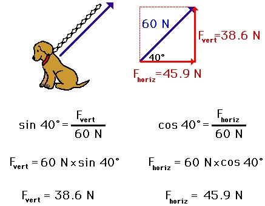

In this section, we will learn two basic methods for determining the magnitudes of the components of a vector directed in two dimensions. The process of determining the magnitude of a vector is known as vector resolution. The two methods of vector resolution that we will examine are the parallelogram method and the trigonometric method. Here, we will focus on the trigonometric method, as it is more commonly used in introductory physics.
Trigonometric Method
The trigonometric method of vector resolution involves using trigonometric functions to determine the components of the vector. Earlier, the use of trigonometric functions to determine the direction of a vector was described. Now in this part of the lesson, trigonometric functions will be used to determine the components of a single vector. Recall from the earlier discussion that trigonometric functions relate the ratio of the lengths of the sides of a right triangle to the measure of an acute angle within the right triangle. As such, trigonometric functions can be used to determine the length of the sides of a right triangle if an angle measure and the length of one side are known. The method of employing trigonometric functions to determine the components of a vector are as follows:
The above method is illustrated below for determining the components of the force acting upon Fido. As the 60-Newton tension force acts upward and rightward on Fido at an angle of 40 degrees, the components of this force can be determined using trigonometric functions.
In conclusion, a vector directed in two dimensions has two components - that is, an influence in two separate directions. The amount of influence in a given direction can be determined using methods of vector resolution.